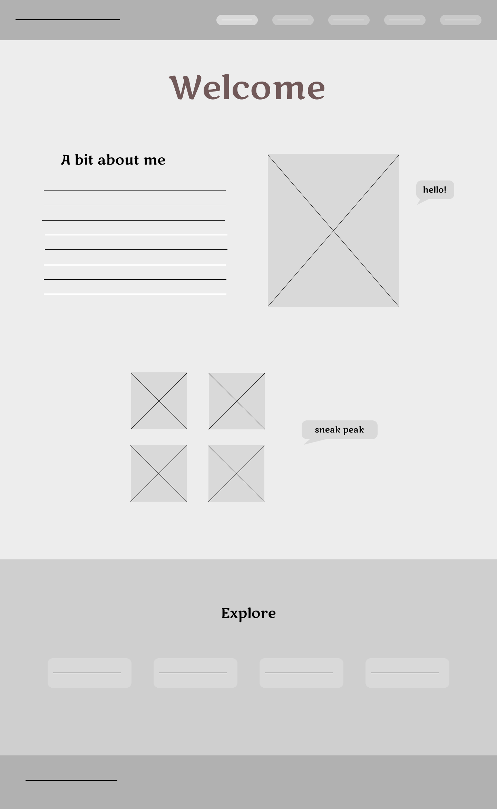
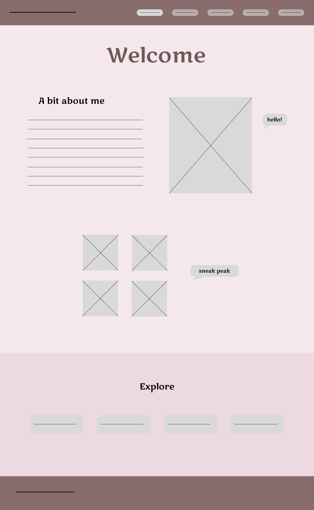
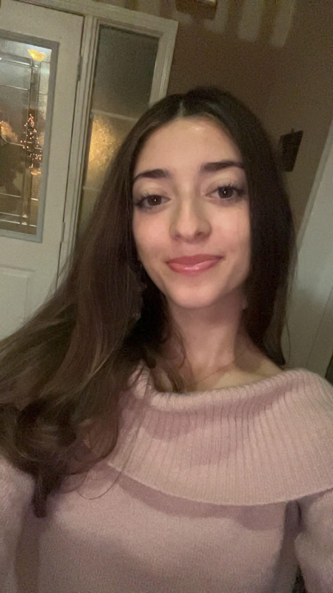
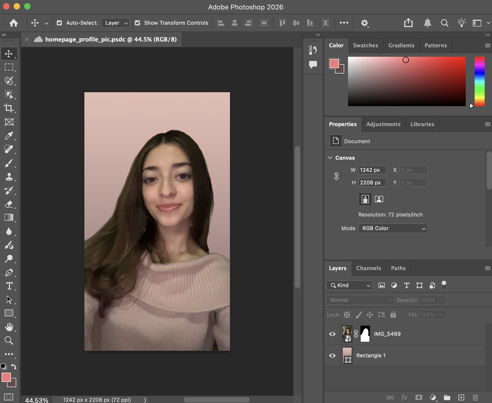

This process page goes through my process of making this website, from planning, to wireframing, to editing, to coding. Below are also the references I used.
✧ Step 1 - Planning
For this website portfolio, I started with the planning phase. Since this was a big project, I wanted to make sure I had a clear vision before jumping into anything. I did a few sketches on paper, experimenting with different wireframe layouts. I prefer starting on paper because it's where my creativity flows most naturally. I took inspiration from previous websites I had made and decided to move forward with the direction that felt the most personal and cohesive. From the beginning, I kept usability in mind, wanting the site to feel intuitive and easy to navigate.


✧ Step 2 — Wireframe
Once I had a direction, I moved to Figma to build a more refined wireframe. I first created a greyscale version as required, then used a colour palette explorer online to land on two main colours (pink and brown). I applied those colours to the wireframe to visualize the final result. Choosing a cohesive colour palette was an important part of establishing a visual identity that would carry through every page.
✧ Step 3 — Content Preparation
I wrote a short 150-word about me paragraph for the homepage. Then I edited my profile photo in Photoshop, removing the background and replacing it with soft pink to match the colour palette. This was an intentional graphic design decision to make the photo feel integrated into the overall visual identity. I also chose Georgia as a serif font for an elegant feel for clean readability.


✧ Step 4 — Coding the Homepage
I opened Visual Studio Code and created one HTML file and one CSS file shared across all pages. I used sample navigation bar code from class as a starting point, then customized the font, colours, and layout. I ensured all nav links had generous padding for accessibility. I then built the about section, sneak peek section with a playful text bubble, and an explore section at the bottom giving users multiple ways to navigate the site, improving overall usability. I used W3Schools as a reference throughout.
✧ Step 5 — Portfolio Page
I selected photographs from my gallery, imported them, and coded a CSS grid with square crops using object-fit: cover for visual consistency. For my previously built websites, I decided to provide direct links rather than embedding them since they are in French — this way visitors can use their browser's built-in translate feature to view them in English, making the content more accessible to a wider audience.
✧ Step 6 — Resume Page
I split my resume into three sections — Education, Experience, and Certifications — and built a table for each. I added alternating row background colours for better readability, which is a usability best practice for structured data. The mauve and pink colour scheme was carried through the table headers to maintain visual identity.
✧ Step 7 — Contact Page
I kept the contact page clean and simple. I used recognisable icons beside each contact method so visitors can identify platforms at a glance. I embedded Google Maps and a YouTube video using iframe tags, making the page richer and more engaging than a plain list of links.
✧ Step 8 — Process Page
I wrote out each step and imported photos of my sketches, wireframes, and Photoshop edits to visually document the journey. Reflecting on the process highlighted how every design decision — from colour to navigation to image editing — contributed to a website that feels cohesive, accessible, and personal.
References
Cappiello, A. (2026). Week 6 - Front-end Web Design & Development - Part 1 [PowerPoint slides]. University of Toronto Mississauga.
Cappiello, A. (2026). Week 7 - Front-end Web Design & Development - Part 2 [PowerPoint slides]. University of Toronto Mississauga.
Cappiello, A. (2026). Week 8 - Front-end Web Design & Development - Part 3 [PowerPoint slides]. University of Toronto Mississauga.
Cappiello, A. (2026). Week 9 - Front-end Web Design & Development - Part 4 [PowerPoint slides]. University of Toronto Mississauga.
Cappiello, A. (2026). Week 10 - Front-end Web Design & Development - Part 5 [PowerPoint slides]. University of Toronto Mississauga.
Cappiello, A. (2026). Week 11 - Front-end Web Design & Development - Part 6 [PowerPoint slides]. University of Toronto Mississauga.
Cappiello, A. (2026). Week 12 - Front-end Web Design & Development - Part 7 [PowerPoint slides]. University of Toronto Mississauga.